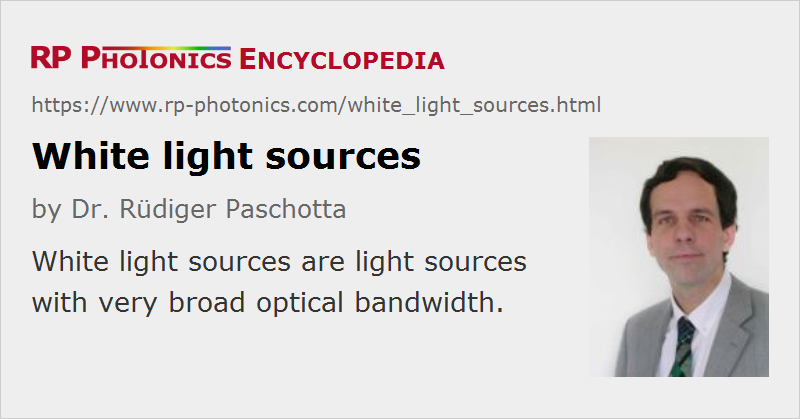

White Light Sources
Definition: light sources with very broad optical bandwidth
More general term: light sources
German: Weißlichtquellen
Categories: photonic devices, non-laser light sources
How to cite the article; suggest additional literature
Author: Dr. Rüdiger Paschotta
A white light source is usually understood to be a light source generating white light, i.e., with a white perception for the human eye.
Some typical types of white light sources are explained in the following:
- Incandescent lamps (e.g., a tungsten-halogen lamps) naturally emit light with a smooth and very broad optical spectrum. They are cheap to fabricate and easy to handle, but have a quite limited luminous efficacy. The lifetime is also often less than satisfactory.
- Some types of gas discharge lamps, in particular high-pressure arc lamps and flash lamps, for example xenon lamps, can produce bright white light. Metal halide lamps offer particularly high performance in terms of radiance and luminous efficacy. Device lifetimes vary strongly, depending on the type of lamps and its operation conditions.
- Spectra of fluorescent lamps or some other gas discharge lamps can also look white but are sometimes much more structured. Such white light sources often have a low color rendering index.
- Light-emitting diodes (LEDs) in a strict sense cannot generate white light, but there are LED-based white light emitters (often called white LEDs), which mostly contain a blue (GaN-based) LED and a phosphor which absorbs part of the blue light and emits fluorescence at longer wavelengths, so that the overall color impression is white. It is also possible to combine the radiation e.g. of LEDs emitting red, green and blue light.
- Lasers are not suitable for directly generating white light. However, there are laser-based RGB sources, and by mixing their red, green and blue outputs, one can obtain intense white light.
Various CIE standard illuminants serve as standard references for different types of white light spectra.
Essential Properties of White Light Sources
The following properties of white light sources are often particularly important for applications:
- For applications like lighting, the color temperature of a white light source, indicating its color tone, is an important parameter.
- The color rendering index (CRI) is a measure for how well colors can be judged when objects are illuminated with that light.
- Concerning energy efficiency, the luminous efficacy is an important parameter. Note that the effectively achieved energy efficiency can also substantially depend on how directional the light emission is. For example, the energy-saving qualities of LED-based solutions often come to a substantial degree from their directed emission, making it easier to send the light where it is needed.
- The temporal coherence of any white light source is necessarily low as a consequence of its broad optical bandwidth.
- Many white light sources also have a low spatial coherence, making it difficult to tightly focus the light, and a correspondingly low radiance. For example, that applies to long-arc lamps, having a large light-emitting volume. A low radiance is usually no problem for applications like lighting, but is not acceptable for applications like projection displays. Higher radiance can be achieved with short-arc lamps, which are operated with high power densities (high intensity discharge lamps).
- Most white light sources operate continuously, some others are made for pulsed emission – in particular, flash lamps.
Our properties of interest may be the operation lifetime, the ability of rapid switching, the constancy of the radiant flux (low intensity noise, weak aging, weak temperature dependence), the constancy of the spectral shape and color tone, and the absence of possibly disturbing ultraviolet light.
Application of White Light Sources
Many white light sources are required for various lighting applications (indoor and outdoor), where one often needs to generate a substantial luminous flux over extended times. The energy efficiency, largely determined by the luminous efficacy, is then particularly important.
There are various other applications in the context of illumination, often in a more or less localized manner – for example, reading lights, projection displays, machine vision and microscope illumination.
Pulsed white light sources can be used for photography, for stroboscopes and in some scientific applications.
Further, there are special applications of white light sources in scientific and technical areas such as spectroscopy, colorimetry, forensic investigations and solar cell testing.
Other Broadband Light Sources
In some cases, the term white light sources is used for sources which do not really produce a white color impression, but just produce light with a broad optical bandwidth. Some of them do not even emit in the visible spectral range, while others cover a range from somewhere in the infrared to the ultraviolet. Certain applications such as white light interferometry do not really need a white color impression, but just the large bandwidth. Other examples for applications are the characterization of optical components and spectroscopy.
While most white light sources have a poor spatial coherence, there are broadband sources with a high spatial coherence, sometimes even with the whole optical power delivered in a single spatial mode e.g. of an optical fiber. This allows focusing of the radiation to very small spots. Such sources can be different types of superluminescent sources, e.g. superluminescent diodes or ASE sources based on rare-earth-doped fibers.
For particularly high bandwidths, sometimes even more than octave-spanning, one may employ supercontinuum sources, based on strongly nonlinear interactions e.g. in an optical fiber. Most widely used for those are photonic crystal fibers. The input light can be supplied in the form ultrashort pulses, nanosecond pulses, or continuously.
For some applications, the optical bandwidth specified as a full-width half-maximum value is important, whereas weak tails in the spectrum are not relevant. In other cases, it is only important to have at least some moderate level of power spectral density over a broad range, even if the spectral flux varies a lot within that range.
Suppliers
The RP Photonics Buyer's Guide contains 31 suppliers for white light sources. Among them:
Questions and Comments from Users
Here you can submit questions and comments. As far as they get accepted by the author, they will appear above this paragraph together with the author’s answer. The author will decide on acceptance based on certain criteria. Essentially, the issue must be of sufficiently broad interest.
Please do not enter personal data here; we would otherwise delete it soon. (See also our privacy declaration.) If you wish to receive personal feedback or consultancy from the author, please contact him e.g. via e-mail.
By submitting the information, you give your consent to the potential publication of your inputs on our website according to our rules. (If you later retract your consent, we will delete those inputs.) As your inputs are first reviewed by the author, they may be published with some delay.
See also: white light, bandwidth, arc lamps, supercontinuum generation, white light interferometers, interferometers, superluminescent sources, amplified spontaneous emission, spectroscopy, color temperature
and other articles in the categories photonic devices, non-laser light sources
|  |
If you like this page, please share the link with your friends and colleagues, e.g. via social media:
These sharing buttons are implemented in a privacy-friendly way!